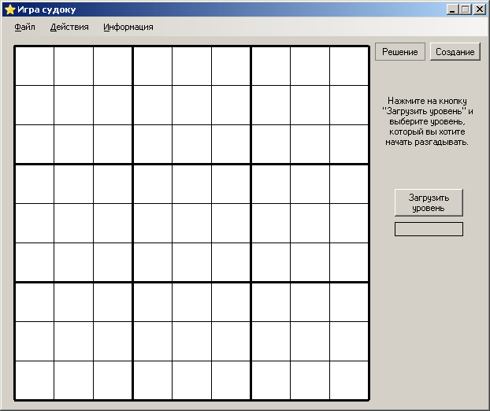
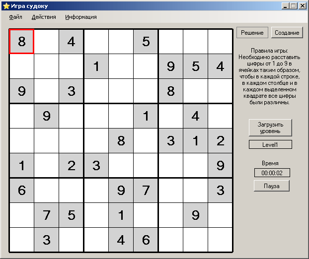
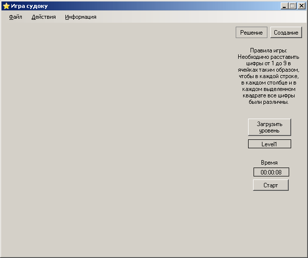
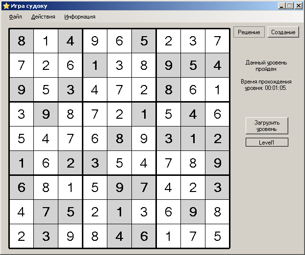

При активации режима "Решение" форма программы выглядит так:

После этого следует загрузить уровень, который Вы хотите начать разгадывать (или который Вы начали уже разгадывать, но не успели и поэтому сохранили его). После загрузки уровня форма программы выглядит так:

Вы можете ставить цифры только в те клетки, которые имеют белый фон. Клетки со светло-серым фоном изменять нельзя. Кроме обычных цифр вы можете поставить в клетку до 6 дополнительных возможных цифр. Для более подробной информации смотрите раздел "Дополнительные метки".
Справа внизу показывается время, которое прошло с начала разгадывания судоку. Вы всегда можете остановить время, поставив игру на паузу. В таком случае форма программы будет выглядеть так:

Для возобновления игры надо нажать на кнопку "Старт".
Если же при загрузке уровня был выбран уже пройденный уровень, то форма программы будет выглядеть так:

В любой момент можно сменить режим на "Создание". При этом все неизменяемые клетки останутся, а все выставленные в процессе решения - исчезнут. Поэтому перед сменой режима будет предложено сохранить изменения. Незавершённые игры надо сохранять в папку SavedGames (Сохранённые игры). А решённые - в папку Answer (Ответы).